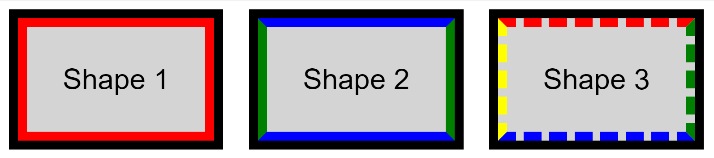
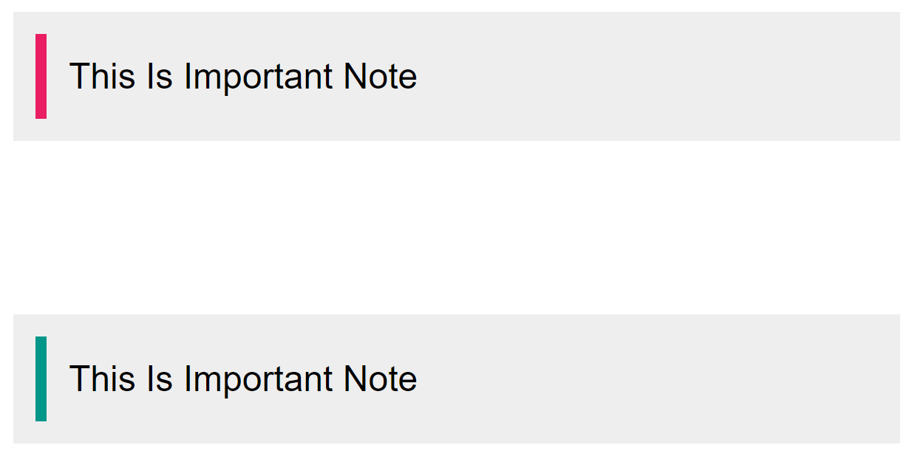

TASK 01
حدود بألوان وأنماط مختلفة
المطلوب
- إنشاء ثلاثة عناصر من نوع `div` من دون تعيين عرض لها.
- عرضها بجانب بعضها مع خلفية رمادية وحواف سمكها `5px`.
- مطابقة المثال: حد أحمر مع `outline` أسود، وحدود متبادلة الألوان، وحد متقطع بأربعة ألوان.

معاينة الناتجLIVE CSS
Shape 1
Shape 2
Shape 3
HTML وCSSANSWER
<div class="shape shape-one">Shape 1</div>
<div class="shape shape-two">Shape 2</div>
<div class="shape shape-three">Shape 3</div>
.shape {
display: inline-block;
padding: 20px;
margin: 20px;
background-color: #d3d3d3;
}
.shape-one {
border: 5px solid red;
outline: 5px solid black;
}
.shape-two {
border: 5px solid;
border-color: blue green;
}
.shape-three {
border: 5px dashed;
border-color: red green blue yellow;
}قيمة لونين في `border-color` تعني أن الأزرق للأعلى والأسفل والأخضر لليمين واليسار. ومع أربعة ألوان يكون الترتيب: أعلى، يمين، أسفل، يسار. يمتد `outline` حول الحد الأحمر من الخارج ولا يغيّر أبعاد العنصر في تخطيط الصفحة.
TASK 02
إخفاء العنصر مع الاحتفاظ بمكانه
المطلوب
- الإبقاء على بنية HTML المعطاة كما هي.
- تحديد عرض العناصر بـ`400px` وإضافة الشريط الملون في يسار كل عنصر ظاهر.
- إخفاء العنصر الثاني مع إبقاء المساحة التي يشغلها.

معاينة الناتجLIVE CSS
This Is Important Note
This Is Important Note
This Is Important Note
HTML المعطى وCSSANSWER
<div class="element element-1">This Is Important Note</div>
<div class="element element-2">This Is Important Note</div>
<div class="element element-3">This Is Important Note</div>
.element {
box-sizing: border-box;
width: 400px;
max-width: 100%;
padding: 10px;
margin: 20px 0;
background-color: #eee;
}
.element-1 {
border-left: 5px solid #e91e63;
}
.element-2 {
visibility: hidden;
}
.element-3 {
border-left: 5px solid #009688;
}تخفي `visibility: hidden` محتوى العنصر الثاني مع بقاء صندوقه ضمن التخطيط، لذلك تظل مساحته محجوزة. تستخدم `box-sizing: border-box` حتى يشمل العرض الكلي `400px` الحشو والحد أيضًا.
المصدر: صفحة تكليفات CSS للدروس 09–12.